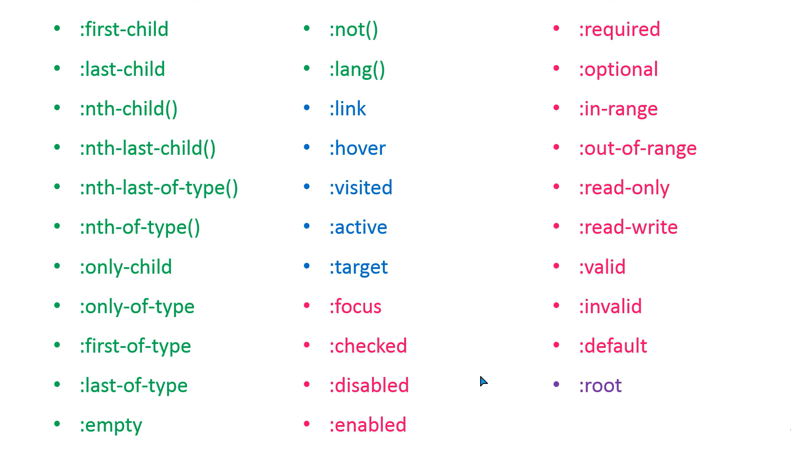
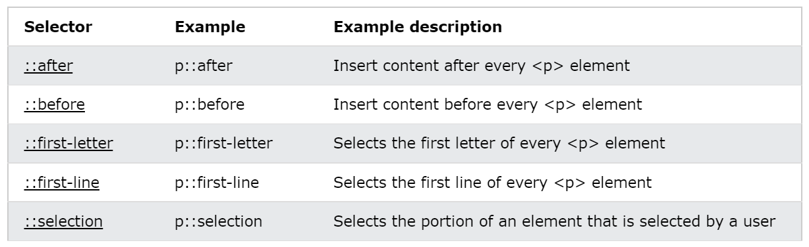

What are CSS Pseudo Classes & Selectors?
Ans:
A pseudo-class is used to define a special state of an elements.
For example, it can be used to:
-
Style an element when a user mouses over it
-
Style visited and unvisited links differently
-
Style an element when it gets focus
There are total 33 pseudo Classess in the CSS :

There are total 5 Pseudo Selectors in the CSS:
